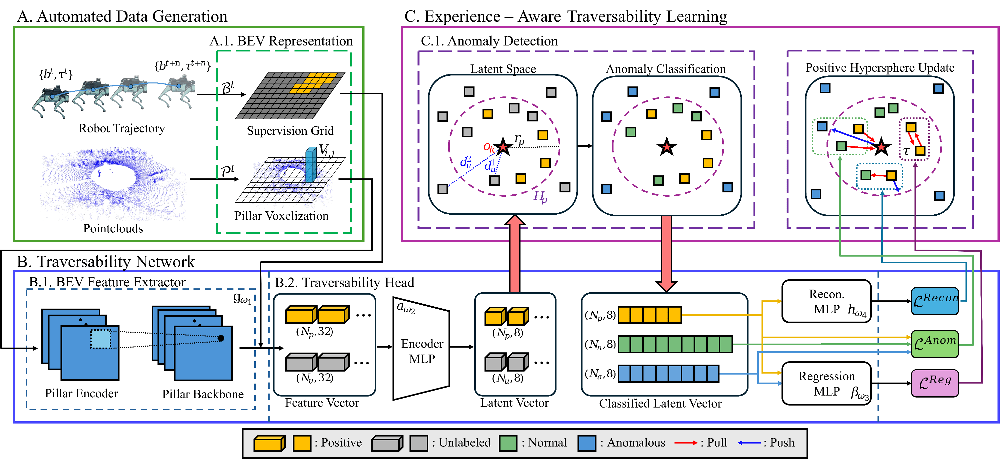
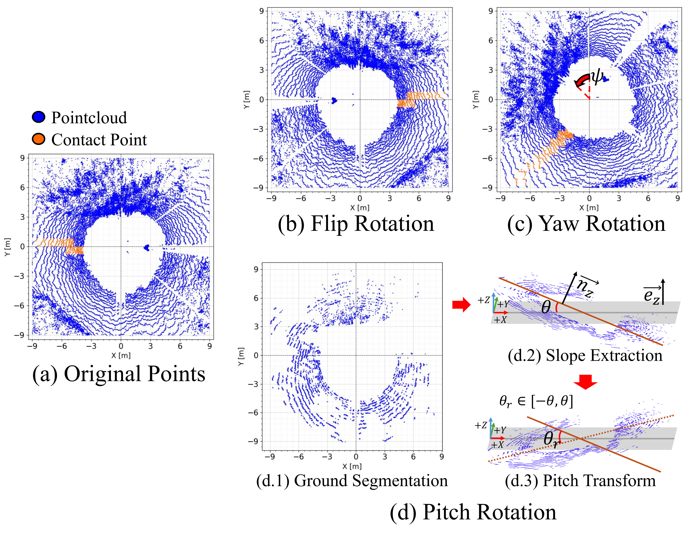
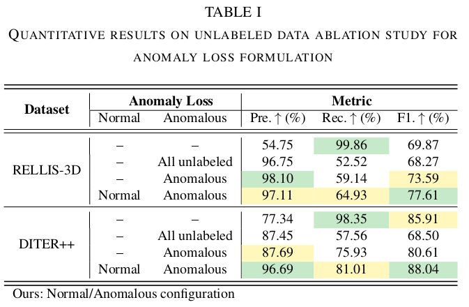

Safe autonomous navigation requires reliable estimation of environmental traversability. Prior research has relied on semantic or geometry-based approaches with human-defined thresholds, but these methods often yield unreliable predictions due to the inherent subjectivity of human supervision. While self-supervised approaches enable robots to learn from their own experience, they still face a fundamental challenge: the positive-only learning problem.
To address these limitations, recent studies have employed Positive-Unlabeled (PU) learning, where the core challenge is identifying positive samples without explicit negative supervision. In this work, we propose GSAT, which addresses these limitations by constructing a positive hypersphere in latent space to classify traversable regions through anomaly detection without explicit negative samples.
Furthermore, our approach employs joint learning of anomaly classification and traversability prediction to more effectively utilize robot experience. We comprehensively evaluate the proposed framework through ablation studies, validation on heterogeneous real-world robotic platforms (Wheeled and Legged), and autonomous navigation demonstrations in complex simulation environments.

Overall Framework. The proposed GSAT framework systematically learns robot-specific traversability through three main components:
By integrating these components, GSAT creates a robust latent boundary that clusters familiar terrains while isolating unseen or hazardous regions, ensuring safe navigation without manual labeling.

To overcome the "positive-only" limitation inherent in self-supervised learning, GSAT artificially broadens the robot's familiar experiences. By applying diverse geometric transformations, we enable the model to learn a robust and generalized positive hypersphere that isn't confined to the exact path taken during training.
Horizontal & Yaw Rotation
We apply Flip and Random Yaw rotations (up to 360°). This ensures the traversability head remains invariant to the robot's approach direction, allowing it to recognize the same terrain from any angle.
Pitch & Slope Transformation
By extracting ground planes and applying Pitch transforms, we simulate various uphill and downhill scenarios. This is crucial for enabling the robot to recognize sloping terrains as safe traversable areas rather than anomalous obstacles.
Key Insight: These augmentations prevent over-fitting to specific trajectories and are the primary driver for forming a continuous traversability boundary in unstructured environments.
We analyze how different handling of unlabeled data within the anomaly loss affects traversability estimation across RELLIS-3D and DITER++.
Proposed (Normal/Anomalous): By leveraging both identified normal and anomalous samples, our method achieves the highest F1-scores (77.61%, 88.04%), validating that incorporating normal samples is crucial for robust boundary refinement.

@inproceedings{cho2026gsat,
author = {Cho, Dongjin and Park, Miryeong and Lee, Juhui and Yang, Geonmo and Cho, Younggun},
title = {GSAT: Geometric Traversability Estimation using Self-supervised Learning with Anomaly Detection for Diverse Terrains},
booktitle = {IEEE ICRA},
year = {2026},
}